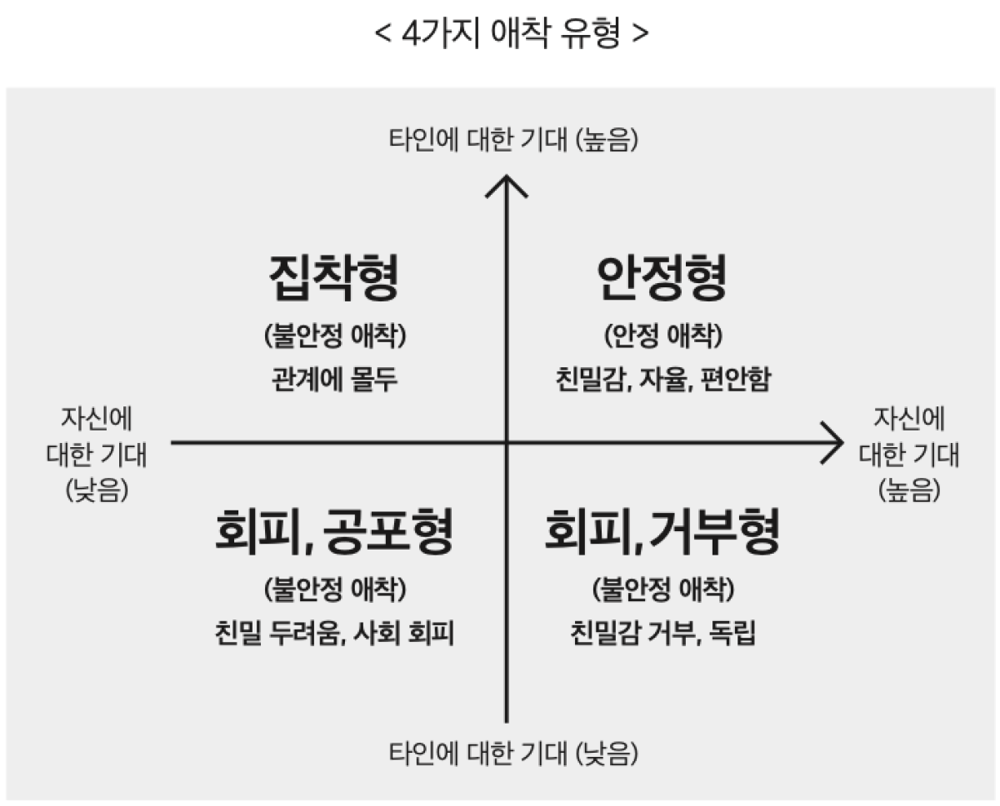

| Q1. 누군가와 깊은 관계가 되는 것에 대해 어떻게 느끼나요? | |
|---|---|
| 관련된 가족에게도 깊이 알고 싶어진다. | |
| 상대방이 나를 진심으로 좋아해 줄지 묻고 확인한다. | |
| 상대방이 너무 깊이 다가오면 부담스럽다. | |
| 사랑받을 기대보다 상처받을까 두렵다. | |
| Q2. 상대방이 연락이 안 되거나 반응이 없을 때 어떤 기분인가요? | |
| 별생각 없이 내 일상을 보낸다. | |
| '나를 싫어하나?', '다른 사람이랑 있나?' 하며 초조해진다. | |
| '혼자만의 시간을 가질 수 있어서 오히려 편안함을 느낀다. | |
| '속상하지만 다가가는 것 자체가 망설여진다. | |
| Q3. 상대방과 의견 충돌(갈등)이 생겼을 때 어떻게 대처하나요? | |
| '대화를 통해 차분하게 문제를 해결하려고 노력한다. | |
| '화를 내거나 따지면서라도 상대방이 내 마음을 알아주길 바란다. | |
| '피하는 것이 상책이라고 생각해 자리를 뜨거나 대화를 차단한다. | |
| '갈등 상황 자체를 피하려고 속마음을 억누른다. | |
| Q4. 평소 내 연애나 대인관계의 특징은 무엇인가요? | |
| '관계에 대해 안정적이고 신뢰감이 있는 편이다. | |
| '상대방에게 집착하거나 끊임없는 애정 확인을 원한다. | |
| '누군가에게 의존하기보다는 혼자 있는 것이 마음 편하다. | |
| '마음은 원하지만 막상 누군가 다가오면 밀어내게 된다. |